Implementing a retinotopic transform using grid_sample from pyTorch¶
The grid_sample transform is a powerful function which allows to transform any input image into a new topology. It is notably used in Spatial Transformer Networks for instance to learn CNN to be invariant to affine transforms. We used it recently in a publication What You See Is What You Transform: Foveated Spatial Transformers as a Bio-Inspired Attention Mechanism by Ghassan Dabane et al.
The use of grid_sample can be tedious and here, we show how to use it to create a log-polar transform of the image and create the following figure:
Let’s first initialize the notebook :
[1]:
import retinoto_py as fovea
args = fovea.Params()
args
[1]:
Params(batch_size=32, num_workers=4, prefetch_factor=0, image_size=224, grid_size_ecc=161, grid_size_ang=309, do_mask=False, do_fovea=True, use_hexagonal_grid=True, rs_min=-3.5, rs_max=0.7, angle_start=-5.235987755982989, angle_margin=0.010166966516471823, mode='bilinear', padding_mode='zeros', model_name='convnext_base', num_epochs=200, subset_factor=1, optimizer_name='adamw', loss_name='CrossEntropyLoss', base_lr=3e-06, final_lr=1e-07, num_warmup_epochs=20, delta1=0.02, delta2=0.02, weight_decay=0.0005, label_smoothing=0.003, do_full_training=True, do_augment=True, augment_proba=0.7, stochastic_depth_prob=0.8, seed=1998, shuffle=True, verbose=False)
[2]:
import os
import numpy as np
import torch
torch.set_printoptions(precision=3, linewidth=140, sci_mode=False)
import torch.nn.functional as F
import matplotlib.pyplot as plt
fig_width = 15
# https://github.com/laurentperrinet/PerrinetBednar15/blob/218b0fa8f114c07ec5f4ba2f6149e461eeb57bf7/notebooks/4%20notebook_figure_results.ipynb#L141
# fig_width_points = 1.75 * 379 # % \showthe\columnwidth
# inches_per_point = 1.0/72.27 # Convert pt to inches
# fig_width = fig_width_points*inches_per_point # width in inches
# dpi_per_inch =
# fig_width = 5
dpi = 100
dpi = 200
dpi = 'figure'
opts_savefig = dict(bbox_inches='tight', dpi=dpi, pad_inches=0, edgecolor=None) # transparent=True
image_size_grid = 257
image_size_grid = 401
image_size_grid = 513
image_size = 401
grid_smallest_log_resolution = np.log2(8.)
definition of the grid¶
Let’s first define a first grid as a set of points defined in absolute coordinates between \(-1\) and \(1\), and define the corresponding meshgrid:
[3]:
image_size_az, image_size_el = 224, 224 #image_size, image_size
image_size_az, image_size_el = 448, 448 #image_size, image_size
rs_ = torch.logspace(0, -grid_smallest_log_resolution, image_size_az, base=2)
ts_ = torch.linspace(-torch.pi, torch.pi, image_size_el+1)[:-1]
grid_xs = torch.outer(rs_, -torch.cos(ts_))
grid_ys = torch.outer(rs_, torch.sin(ts_))
grid_xs.shape, grid_ys.shape, grid_smallest_log_resolution
[3]:
(torch.Size([448, 448]), torch.Size([448, 448]), np.float64(3.0))
These are then formated in the right format to be used by the function:
[4]:
center_x, center_y = 0., 0. # defines the fixation point's center in absolute coordinates
logPolar_grid = torch.stack((grid_xs-center_x, grid_ys-center_y), 2)
logPolar_grid = logPolar_grid.unsqueeze(0) # add batch dim
logPolar_grid.shape
[4]:
torch.Size([1, 448, 448, 2])
[5]:
logPolar_grid.min()
[5]:
tensor(-1.)
[6]:
# F.grid_sample?
application to a synthetic image¶
We define a synthetic image to illustrate the transform, it consists of white pixels, red verticals and blue horizontals, regularly spaced:
[7]:
image_grid_size = 16
image_grid_tens = torch.ones((3, image_size_grid, image_size_grid)).float()
image_grid_tens[0:2, ::image_grid_size, :] = 0
image_grid_tens[1:3, :, ::image_grid_size] = 0.5
fovea_size = 6
image_grid_tens[[0, 2],
int(image_size_grid//2+image_grid_size*fovea_size/2.5):int(image_size_grid//2+image_grid_size*fovea_size),
int(image_size_grid//2+image_grid_size*fovea_size/2.5):int(image_size_grid//2+image_grid_size*fovea_size),
] = 0
image_grid_tens[[0, 2],
int(image_size_grid//2+image_grid_size*fovea_size):int(image_size_grid//2+image_grid_size*fovea_size*2),
int(image_size_grid//2-image_grid_size*fovea_size*2):int(image_size_grid//2-image_grid_size*fovea_size),
] = 0
image_grid_tens[:, (image_size_grid//2-image_grid_size*fovea_size):(image_size_grid//2+image_grid_size*fovea_size), (image_size_grid//2-image_grid_size*fovea_size):(image_size_grid//2+image_grid_size*fovea_size)] *= .5
# Add orange ring
ring_radius = 0.5
ring_width = 0.02
center = image_size_grid / 2
# Create coordinate grids
y, x = torch.meshgrid(torch.arange(image_size_grid), torch.arange(image_size_grid), indexing='ij')
y = y.float()
x = x.float()
dist = torch.sqrt((x - center)**2 + (y - center)**2) / (image_size_grid / 2)
ring_mask = (dist >= ring_radius - ring_width/2) & (dist <= ring_radius + ring_width/2)
# Set ring to orange (R=1, G=0.65, B=0 in normalized format)
image_grid_tens[0][ring_mask] = 1.0 # Red channel
image_grid_tens[1][ring_mask] = 0.65 # Green channel
image_grid_tens[2][ring_mask] = 0.0 # Blue channel
# Add red cross
cross_radius = 16
cross_width = 2
cross_mask_h = (torch.abs(x-center) <= cross_radius) & (torch.abs(y-center) <= cross_width)
cross_mask_v = (torch.abs(y-center) <= cross_radius) & (torch.abs(x-center) <= cross_width)
cross_mask = cross_mask_h + cross_mask_v
# Set cross to orange (R=1, G=0.65, B=0 in normalized format)
image_grid_tens[0][cross_mask] = 1.0 # Red channel
image_grid_tens[1][cross_mask] = 0.0 # Green channel
image_grid_tens[2][cross_mask] = 0.0 # Blue channel
image_grid_tens.shape, image_grid_tens.unsqueeze(0).shape
[7]:
(torch.Size([3, 513, 513]), torch.Size([1, 3, 513, 513]))
to display it, we need to transform the torch format to a numpy / matplotlib compatible one, which can be first tested on a MWE (minimal working example) using torch.movedim:
[8]:
torch.movedim(torch.randn(1, 2, 3), (0, 1, 2), (1, 2, 0)).shape
[8]:
torch.Size([3, 1, 2])
this can be done on the image in a few lines:
[9]:
image_grid = image_grid_tens.squeeze(0)
# swap from C, H, W (torch) to H, W, C (numpy)
image_grid = torch.movedim(image_grid, (1, 2, 0), (0, 1, 2))
image_grid = image_grid.numpy()
image_grid.shape
[9]:
(513, 513, 3)
so that we can display the synthetic image:
[10]:
fig, ax = plt.subplots(figsize=(fig_width, fig_width))
ax.imshow(image_grid)
# ax.plot(image_size_grid//2, image_size_grid//2, 'r+', markersize=40, markeredgewidth=5)
ax.set_xticks([])
ax.set_yticks([])
fig.set_facecolor(color='white')
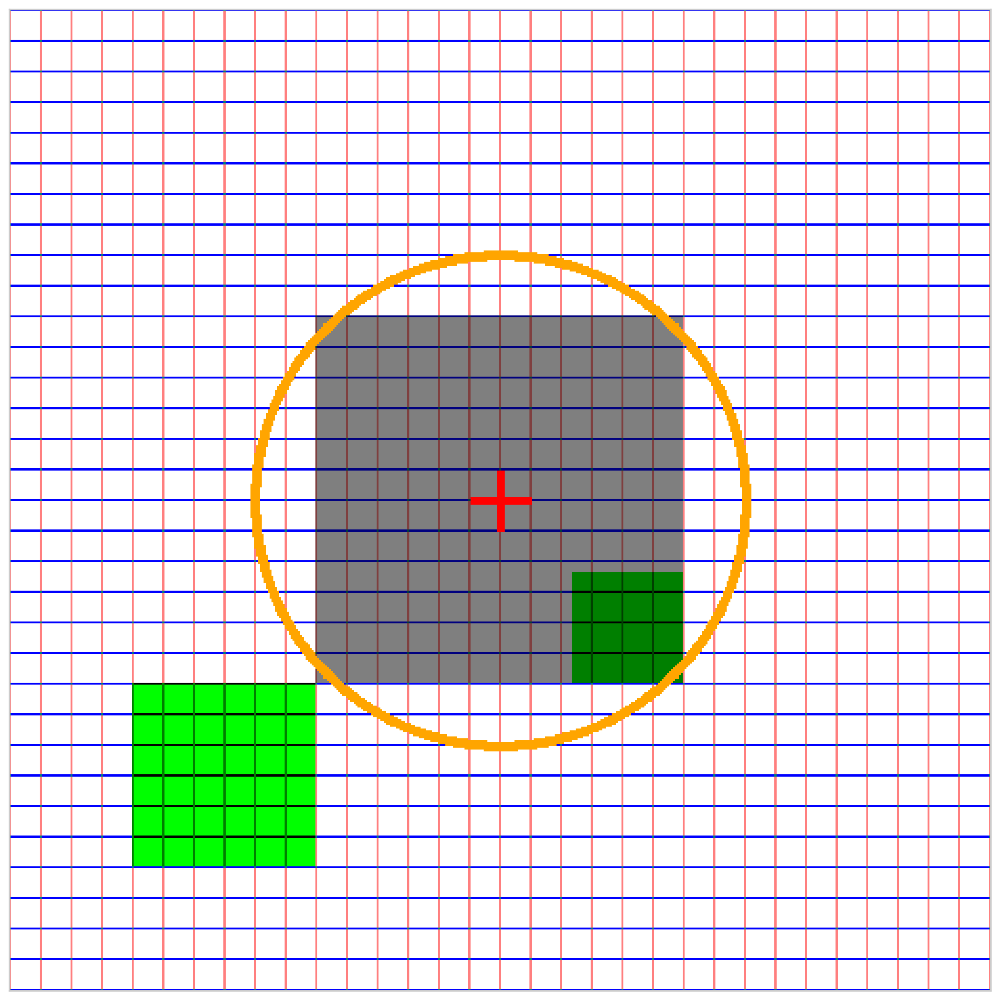
Let’s transform the image of the grid:
[11]:
image_grid_ret_tens = F.grid_sample(image_grid_tens.unsqueeze(0).float(), logPolar_grid, align_corners=True, mode=args.mode, padding_mode=args.padding_mode)
image_grid_tens.shape, logPolar_grid.shape, image_grid_ret_tens.shape
[11]:
(torch.Size([3, 513, 513]),
torch.Size([1, 448, 448, 2]),
torch.Size([1, 3, 448, 448]))
and transform it back to numpy:
[12]:
image_grid_ret_tens = image_grid_ret_tens.squeeze(0)
# swap from C, H, W (torch) to H, W, C (numpy)
image_grid_ret_tens = torch.movedim(image_grid_ret_tens, (1, 2, 0), (0, 1, 2))
image_grid_ret = image_grid_ret_tens.numpy()
image_grid_ret /= image_grid_ret.max()
image_grid_ret.shape
[12]:
(448, 448, 3)
to then display the retinotopic transform of the grid image:
[13]:
fig, ax = plt.subplots(figsize=(fig_width, fig_width))
ax.imshow(image_grid_ret)
ax.set_xticks([])
ax.set_yticks([])
fig.set_facecolor(color='white')
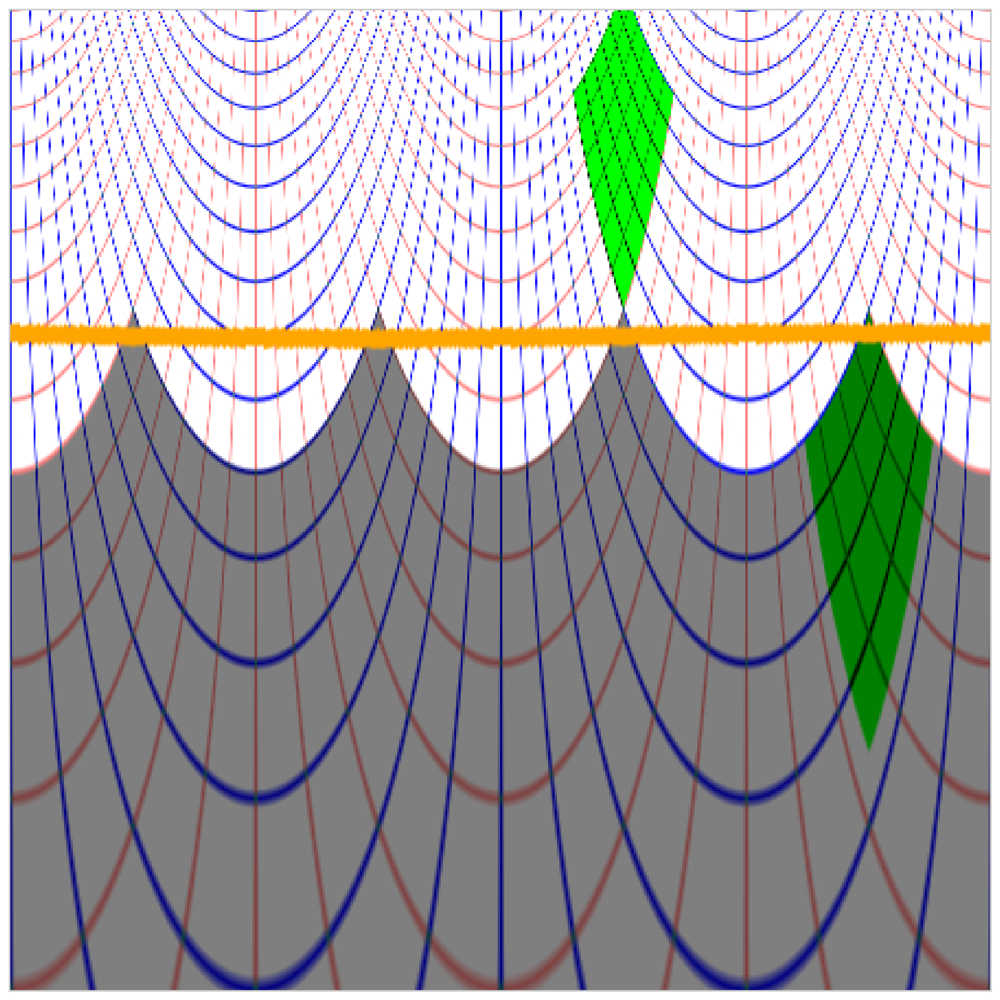
application to a natural image¶
Let’s load an image by extracting a part from the painting “The Ambassadors” by Hans Holbein the Younger or to any other image:
[14]:
# image_size = 380
# image_size_az, image_size_el = image_size, image_size
# rs_ = torch.logspace(0, -4, image_size_az, base=2)
# ts_ = torch.linspace(-torch.pi, torch.pi, image_size_el+1)[:-1]
# grid_xs = torch.outer(rs_, -torch.cos(ts_))
# grid_ys = torch.outer(rs_, torch.sin(ts_))
# grid_xs.shape, grid_ys.shape
[15]:
# image_url = 'https://upload.wikimedia.org/wikipedia/commons/8/88/Hans_Holbein_the_Younger_-_The_Ambassadors_-_Google_Art_Project.jpg'
# image_url = 'https://upload.wikimedia.org/wikipedia/commons/thumb/8/88/Hans_Holbein_the_Younger_-_The_Ambassadors_-_Google_Art_Project.jpg/608px-Hans_Holbein_the_Younger_-_The_Ambassadors_-_Google_Art_Project.jpg'
im_shift_X, im_shift_Y = 0, 27
[16]:
from torchvision.io import read_image
image_url = './images/unexpected-visitor.jpg'
image_url = './images/leopard.jpg'
full_image = read_image(image_url)/255.
# N_X, N_Y, three = image.shape
print(full_image.shape)
torch.Size([3, 587, 800])
[17]:
print (full_image.min(), full_image.max())
tensor(0.) tensor(1.)
[18]:
full_image_np = torch.movedim(full_image, (1, 2, 0), (0, 1, 2)).numpy()
fig, ax = plt.subplots(figsize=(fig_width, fig_width))
ax.imshow(full_image_np)
# ax.set_xticks([])
# ax.set_yticks([])
fig.set_facecolor(color='white')
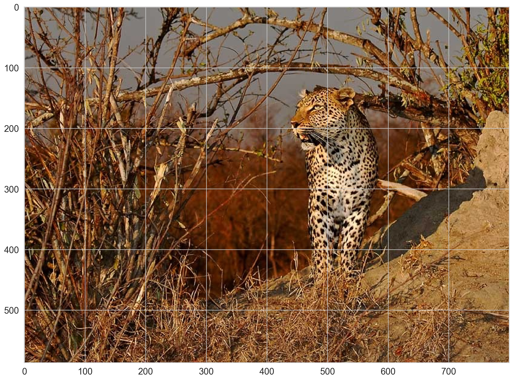
[19]:
im_shift_X, im_shift_Y = 40, 150
image = full_image[:, im_shift_X:(im_shift_X+image_size), im_shift_Y:(im_shift_Y+image_size)]
image.shape
[19]:
torch.Size([3, 401, 401])
[20]:
print (image.min(), image.max())
tensor(0.) tensor(1.)
[21]:
image = (image - image.min()) / (image.max() - image.min())
[22]:
print (image.min(), image.max())
tensor(0.) tensor(1.)
and display it:
[23]:
fig, ax = plt.subplots(figsize=(fig_width, fig_width))
image_np = torch.movedim(full_image, (1, 2, 0), (0, 1, 2)).numpy()
ax.imshow(image_np)
ax.set_xticks([])
ax.set_yticks([])
fig.set_facecolor(color='white')
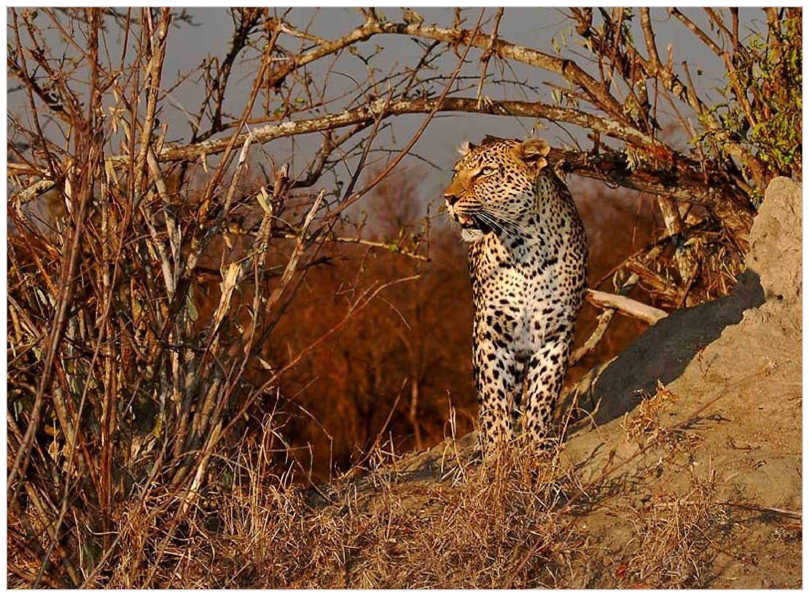
to use it in the function, we need to transform the numpy format to a torch compatible one, which can be first tested on a MWE (minimal working example):
[24]:
torch.movedim(torch.randn(1, 2, 3), (1, 2, 0), (0, 1, 2)).shape
[24]:
torch.Size([2, 3, 1])
this now looks like:
[25]:
# image_tens = torch.from_numpy(image)
# # swap from H, W, C (numpy) to C, H, W (torch)
# image_tens = torch.movedim(image_tens, (0, 1, 2), (1, 2, 0))
# image.shape, image_tens.shape
Let’s transform the image:
[26]:
logpolar_image = F.grid_sample(image.unsqueeze(0).float(), logPolar_grid, align_corners=True, mode=args.mode, padding_mode=args.padding_mode).squeeze(0)
logpolar_image.shape
[26]:
torch.Size([3, 448, 448])
and transform it back to numpy:
[27]:
# swap from C, H, W (torch) to H, W, C (numpy)
logpolar_image_np = torch.movedim(logpolar_image, (1, 2, 0), (0, 1, 2)).numpy()
and display it:
[28]:
fig, ax = plt.subplots(figsize=(fig_width, fig_width))
ax.imshow(logpolar_image_np)
ax.set_xticks([])
ax.set_yticks([])
fig.set_facecolor(color='white')
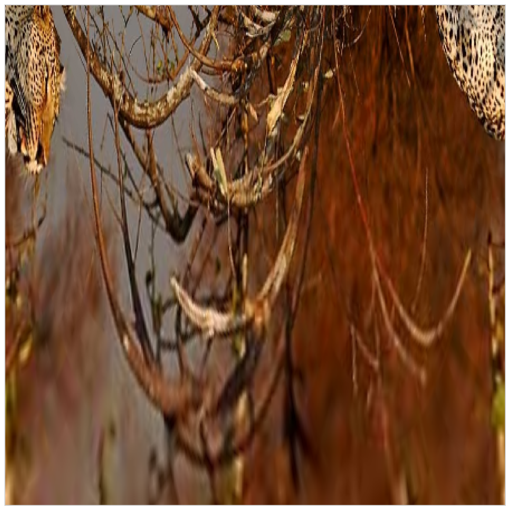
Make a plot in linear-polar coordinates:
[29]:
# get coordinates of boxes in the mesh :
phi = np.linspace(0, 2*np.pi, logpolar_image_np.shape[1])
# r = np.geomspace(np.exp(-grid_smallest_log_resolution), 1, logpolar_image.shape[0])
r = np.linspace(0, 1, logpolar_image_np.shape[0])**.5
Phi, R = np.meshgrid(phi, r)
fig, ax = plt.subplots(1, 1, figsize=(fig_width, fig_width), subplot_kw=dict(polar=True))
# https://matplotlib.org/3.1.1/api/_as_gen/matplotlib.pyplot.pcolormesh.html
# https://matplotlib.org/devdocs/gallery/images_contours_and_fields/pcolormesh_grids.html
m = ax.pcolormesh(Phi, R, np.flipud(logpolar_image_np), vmin=logpolar_image_np.min(), vmax=logpolar_image_np.max(),
edgecolors='none', linewidth=0) #, shading='gouraud'
from matplotlib.patches import FancyArrowPatch
# arc = FancyArrowPatch((1., 1.2), (1.2, 1.2), connectionstyle="arc3,rad=.5", arrowstyle='<->', mutation_scale=20)
# arc = FancyArrowPatch((1., 1.2), (1.2, 1.2), arrowstyle='<->', mutation_scale=20)
# arc = FancyArrowPatch((1., 1.2), (1.2, 1.2),connectionstyle="arc3,rad=.1", arrowstyle='<->', mutation_scale=20)
# ax.add_patch(arc)
ax.set_xticks([])
ax.set_yticks([])
[29]:
[]
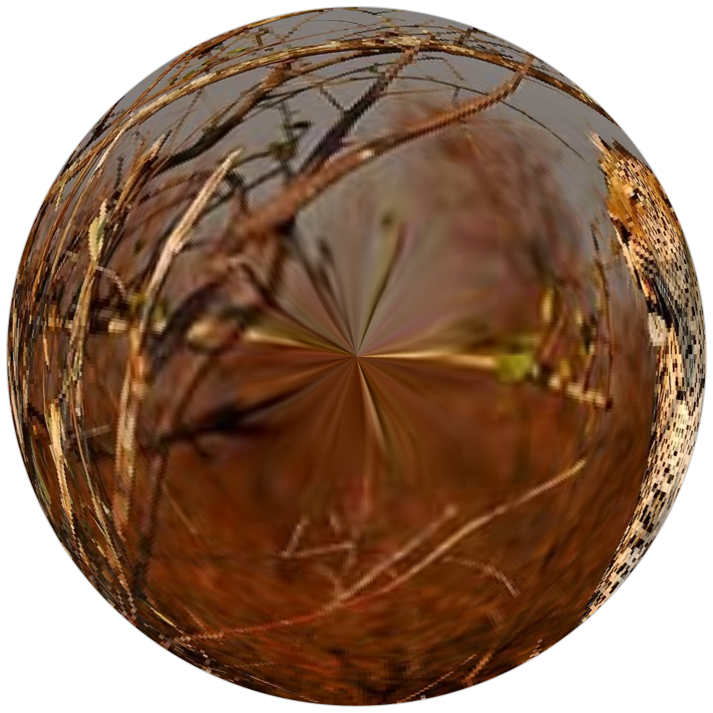
Take another snapshot with a different center:
[30]:
im_shift_X, im_shift_Y = 5, 295
image_shift = full_image[:, im_shift_X:(im_shift_X+image_size), im_shift_Y:(im_shift_Y+image_size)]
# swap from H, W, C (numpy) to C, H, W (torch)
logpolar_image_shift = F.grid_sample(image_shift.unsqueeze(0).float(), logPolar_grid, align_corners=True, mode=args.mode, padding_mode=args.padding_mode).squeeze(0)
image_shift_np = torch.movedim(image_shift, (1, 2, 0), (0, 1, 2)).numpy()
logpolar_image_shift_np = torch.movedim(logpolar_image_shift, (1, 2, 0), (0, 1, 2)).numpy()
[31]:
# fig.add_subplot?
[32]:
fig, axs = plt.subplots(1, 2, figsize=(fig_width, fig_width))
axs[0].imshow(image_shift_np)
axs[1].imshow(logpolar_image_shift_np)
fig.set_facecolor(color='white')
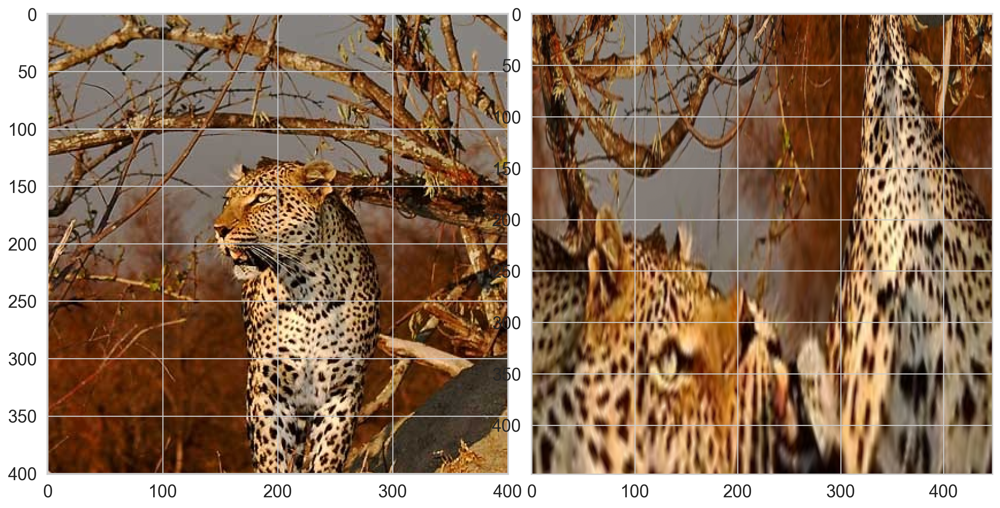
[33]:
fig, axs = plt.subplots(1, 2, figsize=(fig_width, fig_width/2))
axs[0].imshow(image_shift_np)
ax = fig.add_subplot(122, polar=True)
# axs[1].imshow(logpolar_image_shift), shading='gouraud'
m = ax.pcolormesh(Phi, R, np.flipud(logpolar_image_shift_np), vmin=logpolar_image_shift_np.min(), vmax=logpolar_image_shift_np.max(),
edgecolors='none', linewidth=0)
# ax.set_thetamin(0)
# ax.set_thetamax(360)
for ax in axs :
ax.set_xticks([])
ax.set_yticks([])
# ax.get_xaxis().set_ticks([])
# ax.get_yaxis().set_ticks([])
for spine in ax.spines.values():
spine.set_visible(False)
# ax.spines['top'].set_visible(False)
# ax.spines['right'].set_visible(False)
# ax.spines['bottom'].set_visible(False)
# ax.spines['left'].set_visible(False)
# fig.set_facecolor(color='white')
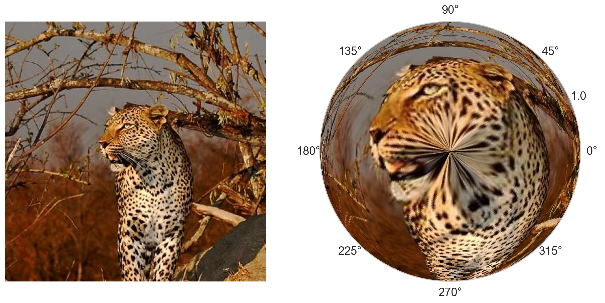
[34]:
fig, ax = plt.subplots(1, 1, figsize=(fig_width, fig_width), subplot_kw=dict(polar=True))
m = ax.pcolormesh(Phi, R, np.flipud(logpolar_image_shift_np), vmin=logpolar_image_shift_np.min(), vmax=logpolar_image_shift_np.max(),
edgecolors='none', linewidth=0) # , shading='gouraud'
ax.set_xticks([])
ax.set_yticks([])
[34]:
[]
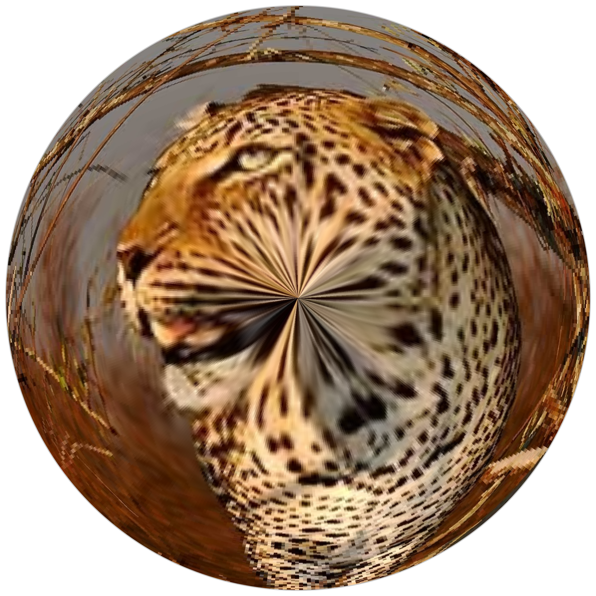
[35]:
fig, axs = plt.subplots(1, 2, figsize=(fig_width, fig_width/2))
axs[0].imshow(image_shift_np)
ax = fig.add_subplot(122, polar=True)
m = ax.pcolormesh(Phi, R, np.flipud(logpolar_image_shift_np), vmin=logpolar_image_shift_np.min(), vmax=logpolar_image_shift_np.max(),
edgecolors='none', linewidth=0)
for ax in axs :
ax.set_xticks([])
ax.set_yticks([])
for spine in ax.spines.values():
spine.set_visible(False)
fig.set_facecolor(color='white')
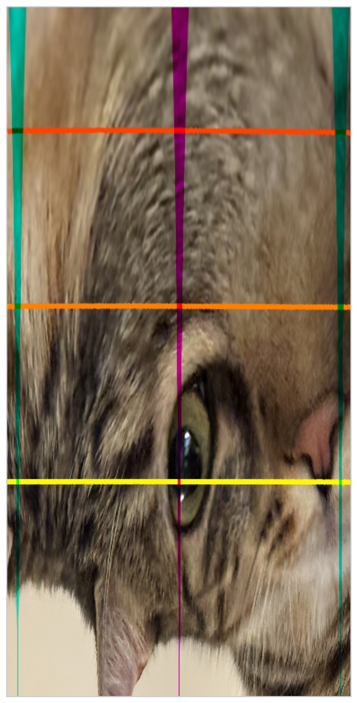
summary¶
version with maps¶
[36]:
fig_width = 15
fig, axs = plt.subplots(2, 3, figsize=(fig_width, fig_width*2/3))
from matplotlib.patches import Circle
ax = axs[0][0]
ax.imshow(image_grid)
# ax.plot(image_size//2, image_size//2, 'r+', markersize=20, markeredgewidth=2)
color = 'b'
circ = Circle((image_size_grid//2, image_size_grid//2), radius=(image_size_grid//60), edgecolor=color, facecolor=color)
ax.add_patch(circ)
circ = Circle((image_size_grid//2, image_size_grid//2), radius=(image_size_grid//4), lw=4, edgecolor=color, facecolor='none')
ax.add_patch(circ)
ax.text(-.1, 1.05, 'A', fontsize=20, color='black', transform=ax.transAxes)
# ax.plot(image_size_grid//2, image_size_grid//2, 'r+', markersize=20, markeredgewidth=2)
ax.set_xlabel(r'$x$', fontsize=14)
ax.set_ylabel(r'$y$', fontsize=14)
ax = axs[1][0]
ax.imshow(image_grid_ret)
ax.text(-.1, 1.05, 'B', fontsize=20, color='black', transform=ax.transAxes)
ax.set_xlabel(r'$\theta$', fontsize=14)
ax.set_ylabel(r'log($\rho$)', fontsize=14)
ax = axs[0][1]
ax.imshow(image_np)
circ = Circle((image_size//2, image_size//2), radius=(image_size//60), edgecolor=color, facecolor=color)
ax.add_patch(circ)
circ = Circle((image_size//2, image_size//2), radius=(image_size//4), lw=4, edgecolor=color, facecolor='none')
ax.add_patch(circ)
ax.set_xlabel(r'$x$', fontsize=14)
ax.text(-.1, 1.05, 'C', fontsize=20, color='black', transform=ax.transAxes)
ax = axs[1][1]
ax.imshow(logpolar_image_np)
ax.set_xlabel(r'$\theta$', fontsize=14)
ax.text(-.1, 1.05, 'D', fontsize=20, color='black', transform=ax.transAxes)
ax = axs[0][2]
ax.imshow(image_shift_np)
circ = Circle((image_size//2, image_size//2), radius=(image_size//60), edgecolor=color, facecolor=color)
ax.add_patch(circ)
circ = Circle((image_size//2, image_size//2), radius=(image_size//4), lw=4, edgecolor=color, facecolor='none')
ax.add_patch(circ)
ax.set_xlabel(r'$x$', fontsize=14)
ax.text(-.1, 1.05, 'E', fontsize=20, color='black', transform=ax.transAxes)
ax = axs[1][2]
ax.imshow(logpolar_image_shift_np)
ax.set_xlabel(r'$\theta$', fontsize=14)
ax.text(-.1, 1.05, 'F', fontsize=20, color='black', transform=ax.transAxes)
for ax in axs.ravel():
ax.set_xticks([])
ax.set_yticks([])
fig.set_facecolor(color='white')
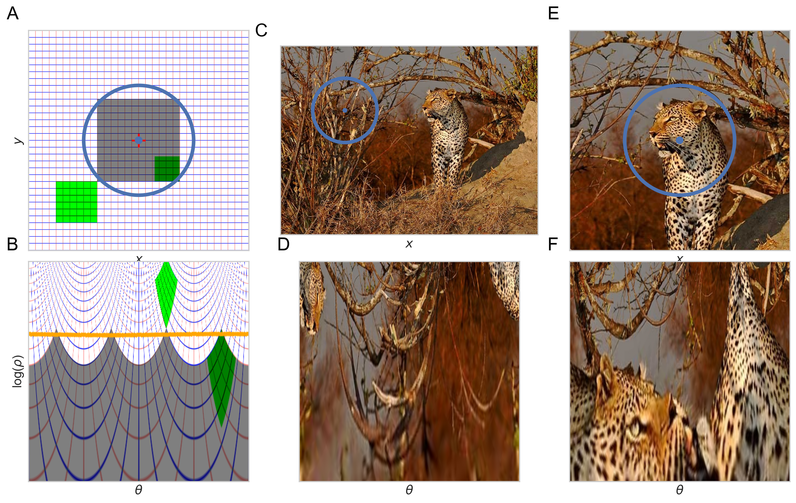
[37]:
# if do_save: to_save(fig, name='fig-logpolar')
version with reconstructions¶
[38]:
fig_width = 15
fig_width = 9
fig, axs = plt.subplots(2, 3, figsize=(fig_width, fig_width*2/3))
from matplotlib.patches import Circle
ax = axs[0][0]
ax.imshow(image_grid)
# ax.plot(image_size//2, image_size//2, 'r+', markersize=20, markeredgewidth=2)
color = 'b'
circ = Circle((image_size_grid//2, image_size_grid//2), radius=(image_size_grid//60), edgecolor=color, facecolor=color)
ax.add_patch(circ)
circ = Circle((image_size_grid//2, image_size_grid//2), radius=(image_size_grid//4), lw=4, edgecolor=color, facecolor='none')
ax.add_patch(circ)
ax.text(-.1, 1.05, 'A', fontsize=20, color='black', transform=ax.transAxes)
# ax.plot(image_size_grid//2, image_size_grid//2, 'r+', markersize=20, markeredgewidth=2)
ax.set_xlabel(r'$x$', fontsize=14)
ax.set_ylabel(r'$y$', fontsize=14)
# ax = axs[1][0]
ax = fig.add_subplot(2, 3, 4, polar=True)
m = ax.pcolormesh(Phi, R, np.flipud(image_grid_ret), vmin=image_grid_ret.min(), vmax=image_grid_ret.max(),
edgecolors='none', linewidth=0) # , shading='gouraud'
# ax.imshow(image_grid_ret)
ax.text(-.1, 1.05, 'D', fontsize=20, color='black', transform=ax.transAxes)
ax.text(.15, -.05, r'$\leftarrow\theta\rightarrow$', fontsize=14, color='black', transform=ax.transAxes, rotation=-20)
ax.text(.65, -.05, r'$\searrow \rho$', fontsize=14, color='black', transform=ax.transAxes, rotation=10)
ax = axs[0][1]
ax.imshow(image_np)
# circ = Circle((image_size//2, image_size//2), radius=(image_size//60), edgecolor=color, facecolor=color)
# ax.add_patch(circ)
# circ = Circle((image_size//2, image_size//2), radius=(image_size//4), lw=4, edgecolor=color, facecolor='none')
# ax.add_patch(circ)
ax.set_xlabel(r'$x$', fontsize=14)
ax.text(-.1, 1.05, 'B', fontsize=20, color='black', transform=ax.transAxes)
# ax = axs[1][1]
ax = fig.add_subplot(2, 3, 5, polar=True)
m = ax.pcolormesh(Phi, R, np.flipud(logpolar_image_np), vmin=logpolar_image_np.min(), vmax=logpolar_image_np.max(),
edgecolors='none', linewidth=0)
# ax.imshow(logpolar_image)
ax.text(.15, -.05, r'$\leftarrow\theta\rightarrow$', fontsize=14, color='black', transform=ax.transAxes, rotation=-20)
ax.text(.65, -.05, r'$\searrow \rho$', fontsize=14, color='black', transform=ax.transAxes, rotation=10)
ax.text(-.1, 1.05, 'E', fontsize=20, color='black', transform=ax.transAxes)
ax = axs[0][2]
ax.imshow(image_shift_np)
circ = Circle((image_size//2, image_size//2), radius=(image_size//60), edgecolor=color, facecolor=color)
ax.add_patch(circ)
circ = Circle((image_size//2, image_size//2), radius=(image_size//4), lw=4, edgecolor=color, facecolor='none')
ax.add_patch(circ)
ax.set_xlabel(r'$x$', fontsize=14)
ax.text(-.1, 1.05, 'C', fontsize=20, color='black', transform=ax.transAxes)
# ax = axs[1][2]
ax = fig.add_subplot(2, 3, 6, polar=True)
m = ax.pcolormesh(Phi, R, np.flipud(logpolar_image_shift_np), vmin=logpolar_image_shift_np.min(), vmax=logpolar_image_shift_np.max(),
edgecolors='none', linewidth=0) # shading='gouraud',
# ax.imshow(logpolar_image_shift)
# ax.set_xlabel(r'$\theta$', fontsize=14)
# angle_arc = 3
# arc = FancyArrowPatch((angle_arc, 1.1), (angle_arc+.2, 1.1),connectionstyle="arc3,rad=.1", arrowstyle='<->', mutation_scale=20)
# ax.add_patch(arc)
ax.text(.15, -.05, r'$\leftarrow\theta\rightarrow$', fontsize=14, color='black', transform=ax.transAxes, rotation=-20)
ax.text(.65, -.05, r'$\searrow \rho$', fontsize=14, color='black', transform=ax.transAxes, rotation=10)
ax.text(-.1, 1.05, 'F', fontsize=20, color='black', transform=ax.transAxes)
for ax in axs.ravel():
ax.set_xticks([])
ax.set_yticks([])
for spine in ax.spines.values():
spine.set_visible(False)
fig.set_facecolor(color='white')
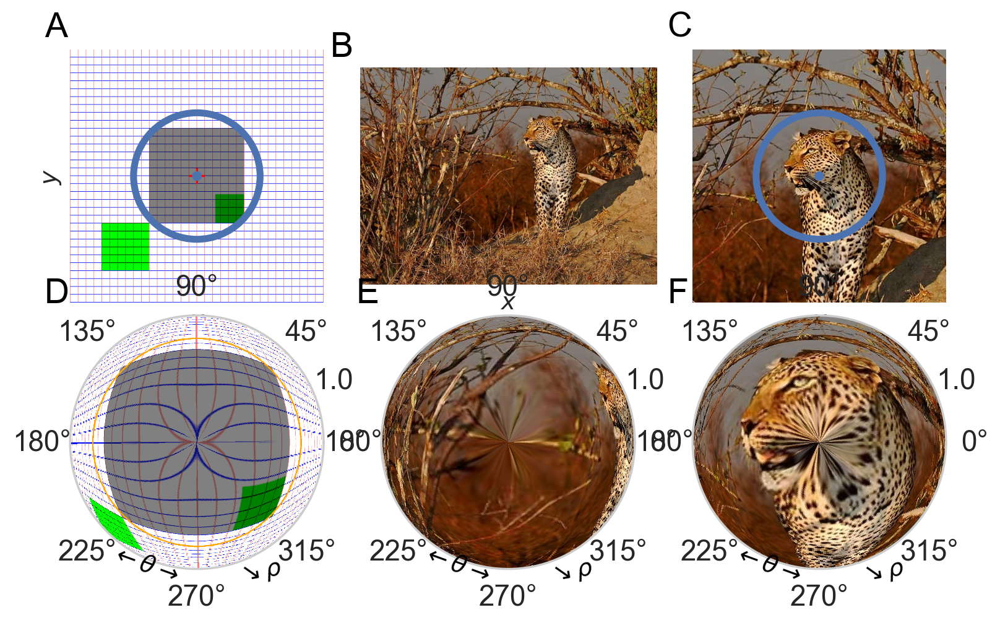
[39]:
fig_width = 9
fig, axs = plt.subplots(3, 3, figsize=(fig_width, fig_width*5/6), layout="constrained")
from matplotlib.patches import Circle
fontsize_letters = 12
fontsize_labels = 9
ax = axs[0][0]
ax.imshow(image_grid)
color = 'b'
circ = Circle((image_size_grid//2, image_size_grid//2), radius=(image_size_grid//60), edgecolor=color, facecolor=color)
ax.add_patch(circ)
circ = Circle((image_size_grid//2, image_size_grid//2), radius=(image_size_grid//4), lw=4, edgecolor=color, facecolor='none')
ax.add_patch(circ)
ax.text(-.1, 1.05, 'A', fontsize=fontsize_letters, color='black', weight='bold', transform=ax.transAxes)
ax.set_xlabel(r'$x$', fontsize=fontsize_labels)
ax.set_ylabel(r'$y$', fontsize=fontsize_labels)
# ax = axs[1][0]
ax = axs[1][0]
ax.imshow(image_grid_ret)
ax.text(-.1, 1.05, 'B', fontsize=fontsize_letters, color='black', weight='bold', transform=ax.transAxes)
ax.set_xlabel(r'$\theta$', fontsize=fontsize_labels)
ax.set_ylabel(r'$\rho$', fontsize=fontsize_labels)
ax = fig.add_subplot(3, 3, 7, polar=True)
m = ax.pcolormesh(Phi, R, np.flipud(image_grid_ret), vmin=image_grid_ret.min(), vmax=image_grid_ret.max(),
edgecolors='none', linewidth=0)
# ax.imshow(image_grid_ret)
ax.text(-.1, 1.05, 'C', fontsize=fontsize_letters, color='black', weight='bold', transform=ax.transAxes)
ax.text(.15, -.05, r'$\leftarrow\theta\rightarrow$', fontsize=fontsize_labels, color='black', transform=ax.transAxes, rotation=-20)
ax.text(.65, -.05, r'$\searrow \rho$', fontsize=fontsize_labels, color='black', transform=ax.transAxes, rotation=10)
plt.tick_params(axis='both', labelsize=fontsize_labels)
ax = axs[0][1]
ax.imshow(image_np)
# circ = Circle((image_size//2, image_size//2), radius=(image_size//60), edgecolor=color, facecolor=color)
# ax.add_patch(circ)
# circ = Circle((image_size//2, image_size//2), radius=(image_size//4), lw=4, edgecolor=color, facecolor='none')
# ax.add_patch(circ)
ax.text(-.1, 1.05, 'D', fontsize=fontsize_letters, color='black', weight='bold', transform=ax.transAxes)
# ax = axs[1][1]
ax = axs[1][1]
ax.imshow(logpolar_image_np)
ax.text(-.1, 1.05, 'E', fontsize=fontsize_letters, color='black', weight='bold', transform=ax.transAxes)
ax = fig.add_subplot(3, 3, 8, polar=True)
m = ax.pcolormesh(Phi, R, np.flipud(logpolar_image_np), vmin=logpolar_image_np.min(), vmax=logpolar_image_np.max(),
edgecolors='none', linewidth=0)
# ax.imshow(logpolar_image)
ax.text(.15, -.05, r'$\leftarrow\theta\rightarrow$', fontsize=fontsize_labels, color='black', transform=ax.transAxes, rotation=-20)
ax.text(.65, -.05, r'$\searrow \rho$', fontsize=fontsize_labels, color='black', transform=ax.transAxes, rotation=10)
ax.text(-.1, 1.05, 'F', fontsize=fontsize_letters, color='black', weight='bold', transform=ax.transAxes)
plt.tick_params(axis='both', labelsize=fontsize_labels)
ax = axs[0][2]
ax.imshow(image_shift_np)
# circ = Circle((image_size//2, image_size//2), radius=(image_size//60), edgecolor=color, facecolor=color)
# ax.add_patch(circ)
# circ = Circle((image_size//2, image_size//2), radius=(image_size//4), lw=4, edgecolor=color, facecolor='none')
# ax.add_patch(circ)
ax.text(-.1, 1.05, 'G', fontsize=fontsize_letters, color='black', weight='bold', transform=ax.transAxes)
ax = axs[1][2]
ax.imshow(logpolar_image_shift_np)
ax.text(-.1, 1.05, 'H', fontsize=fontsize_letters, color='black', weight='bold', transform=ax.transAxes)
ax = fig.add_subplot(3, 3, 9, polar=True)
m = ax.pcolormesh(Phi, R, np.flipud(logpolar_image_shift_np), vmin=logpolar_image_shift_np.min(), vmax=logpolar_image_shift_np.max(),
edgecolors='none', linewidth=0) # shading='gouraud',
ax.text(.15, -.05, r'$\leftarrow\theta\rightarrow$', fontsize=fontsize_labels, color='black', transform=ax.transAxes, rotation=-20)
ax.text(.65, -.05, r'$\searrow \rho$', fontsize=fontsize_labels, color='black', transform=ax.transAxes, rotation=10)
ax.text(-.1, 1.05, 'I', fontsize=fontsize_letters, color='black', weight='bold', transform=ax.transAxes)
plt.tick_params(axis='both', labelsize=fontsize_labels)
for ax in axs.ravel():
ax.set_xticks([])
ax.set_yticks([])
for spine in ax.spines.values():
spine.set_visible(False)
fig.set_facecolor(color='white')
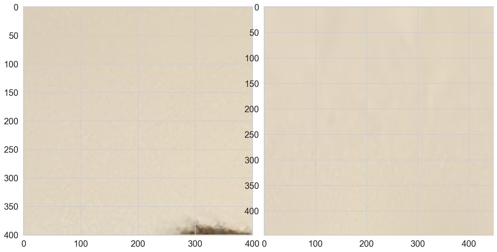
[ ]:
fovea.savefig(fig, name='30_logpolar', figures_folder=args.figures_folder)
movies illustrating the properties of the log-polar transform¶
[41]:
from torchvision.transforms import RandomAffine
[42]:
fig_width_points = 1600
inches_per_point = 1.0/72.27 # Convert pt to inches
fig_width = fig_width_points*inches_per_point # width in inches
def create_fig(theta=np.pi/4, scale=1, fig_width=fig_width):
image_grid_size = 8
image_grid_tens = torch.ones((3, image_size_grid, image_size_grid)).float()
fovea_size = 5
image_square_tens = torch.ones((3, image_size_grid, image_size_grid)).float()
image_square_tens[[1, 0], # green square
int(image_size_grid//2+image_grid_size*fovea_size/2.5):int(image_size_grid//2+image_grid_size*fovea_size),
int(image_size_grid//2+image_grid_size*fovea_size/2.5):int(image_size_grid//2+image_grid_size*fovea_size),
] = 0
transform = RandomAffine(degrees=(theta*180/np.pi, theta*180/np.pi+0.01), scale=(scale, scale))
image_square_tens = transform(image_square_tens)
image_grid_tens[[0, 2], :, :] = image_square_tens[[0, 2], :, :]
image_grid_tens[[0, 2],
int(image_size_grid//2+image_grid_size*fovea_size):int(image_size_grid//2+image_grid_size*fovea_size*2.5),
int(image_size_grid//2-image_grid_size*fovea_size*2.5):int(image_size_grid//2-image_grid_size*fovea_size),
] = 0
image_grid_tens[0:2, ::image_grid_size, :] = 0 # grid H
image_grid_tens[1:3, :, ::image_grid_size] = 0 # grid V
image_grid_tens[:, (image_size_grid//2-image_grid_size*fovea_size):(image_size_grid//2+image_grid_size*fovea_size), (image_size_grid//2-image_grid_size*fovea_size):(image_size_grid//2+image_grid_size*fovea_size)] *= .5 # fovea
image_grid = image_grid_tens.squeeze(0)
# swap from C, H, W (torch) to H, W, C (numpy)
image_grid = torch.movedim(image_grid, (1, 2, 0), (0, 1, 2))
image_grid = image_grid.numpy()
image_grid_ret_tens = F.grid_sample(image_grid_tens.unsqueeze(0).float(), logPolar_grid, align_corners=True, mode=args.mode, padding_mode=args.padding_mode)
image_grid_ret_tens = image_grid_ret_tens.squeeze(0)
# swap from C, H, W (torch) to H, W, C (numpy)
image_grid_ret_tens = torch.movedim(image_grid_ret_tens, (1, 2, 0), (0, 1, 2))
image_grid_ret = image_grid_ret_tens.numpy()
image_grid_ret /= image_grid_ret.max()
fig, axs = plt.subplots(1, 3, figsize=(fig_width, fig_width/3))
from matplotlib.patches import Circle
ax = axs[0]
ax.imshow(image_grid)
# ax.plot(image_size//2, image_size//2, 'r+', markersize=20, markeredgewidth=2)
color = 'b'
# circ = Circle((image_size_grid//2, image_size_grid//2), radius=(image_size_grid//60), edgecolor=color, facecolor=color)
# ax.add_patch(circ)
# circ = Circle((image_size_grid//2, image_size_grid//2), radius=(image_size_grid//4), lw=4, edgecolor=color, facecolor='none')
# ax.add_patch(circ)
ax.text(-.1, 1.05, 'A', fontsize=fontsize_letters, color='black', transform=ax.transAxes)
# ax.plot(image_size_grid//2, image_size_grid//2, 'r+', markersize=20, markeredgewidth=2)
ax.set_xlabel(r'$x$', fontsize=fontsize_labels)
ax.set_ylabel(r'$y$', fontsize=fontsize_labels)
ax = axs[1]
ax.imshow(image_grid_ret)
ax.text(-.1, 1.05, 'B', fontsize=fontsize_letters, color='black', transform=ax.transAxes)
ax.set_xlabel(r'$\theta$', fontsize=fontsize_labels)
ax.set_ylabel(r'$\rho$', fontsize=fontsize_labels)
ax = fig.add_subplot(1, 3, 3, polar=True)
m = ax.pcolormesh(Phi, R, np.flipud(image_grid_ret), vmin=logpolar_image.min(), vmax=logpolar_image.max(),
edgecolors='none', linewidth=0)
# ax.imshow(logpolar_image)
ax.text(.15, -.05, r'$\leftarrow\theta\rightarrow$', fontsize=fontsize_labels, color='black', transform=ax.transAxes, rotation=-20)
ax.text(.65, -.05, r'$\searrow \rho$', fontsize=fontsize_labels, color='black', transform=ax.transAxes, rotation=10)
ax.text(-.1, 1.05, 'C', fontsize=fontsize_letters, color='black', transform=ax.transAxes)
# for tick in ax.xaxis.get_major_ticks():
# tick.label.set_fontsize(fontsize_labels)
plt.tick_params(axis='both', labelsize=fontsize_labels)
for ax in axs.ravel():
ax.set_xticks([])
# ax.set_xticklabels([])
ax.set_yticks([])
for spine in ax.spines.values():
spine.set_visible(False)
fig.tight_layout()
fig.set_facecolor(color='white')
return fig
fig = create_fig(theta=-np.pi/2, scale=2.5)
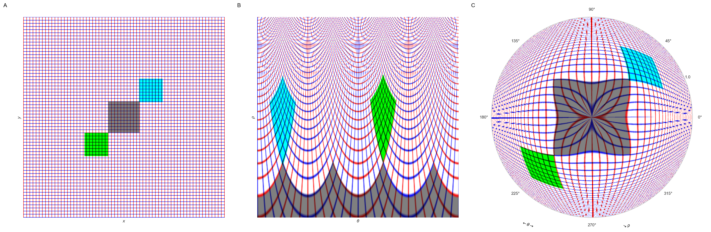
[43]:
from tqdm import tqdm, trange
fname = args.figures_folder / '30_grid.mp4'
if not(fname.exists()):
n_frame = 160
fnames = []
for i_frame in trange(n_frame):
fname = f'/tmp/frame_{i_frame:04d}.png'
fig = create_fig(theta=np.pi/2 + i_frame*2*np.pi/n_frame, scale=2.5+np.sin(i_frame*2*np.pi/n_frame), fig_width=fig_width)
fig.savefig(fname, **opts_savefig)
fnames.append(fname)
plt.close(fig)
mp4name = fovea.make_mp4(fname, fnames, fps=16)